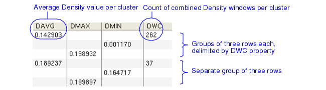
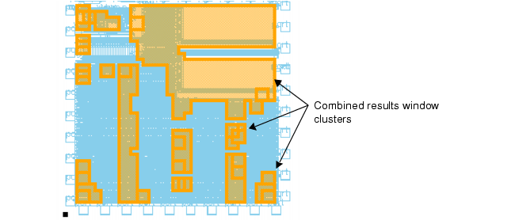
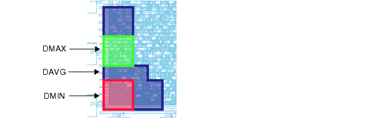
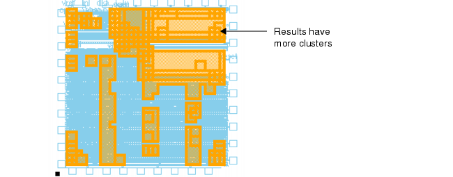

This procedure
shows how to use the Density COMBINE option together with Calibre
RVE.
Density results
sent to the DRC Results Database are in merged form. This sacrifices results detail
in favor of reduced data size and simplicity of results presentation.
RDB results are not merged; hence, greater detail is available at
the expense of increased data size and complexity of results presentation.
In certain scenarios, such as with IP blocks
in the design, the block’s placement location can result in false
density errors because the Density WINDOW grid no longer aligns
with the base point of the block as when the block is unplaced.
To mitigate these errors, small STEP sizes are used, which dramatically
increases the number of RDB results (and the file size).
The Density COMBINE option
allows you to consolidate RDB result windows into more manageable
merged regions. The COMBINE option also provides minimum, average,
and maximum density values for a given region, which is helpful
in interpreting the results.
The d, w, and s parameters shown in this procedure
can be chosen for your process and set up as variables in the rule
file.
Procedure
- Add the COMBINE >= 0 option
to an existing Density check, as follows:
m1_density {
@ Density m1 < ^d% outside of keepout layer
DENSITY m1 keepout < d
[(AREA(m1)/(!AREA(keepout)))/AREA()] WINDOW w STEP s
COMBINE >= 0
RDB density_m1.rdb
}
This checks the density of
m1 outside of a keepout layer. The COMBINE >= 0 option causes RDB
results windows to be combined (merged) if they share edges.
- Open the density_m1.rdb file
in Calibre RVE.
Figure 1. Combined Density RDB
Results
Figure 1 shows a typical table of results. Property
definitions are these:
DAVG — Average density
value for all windows in a cluster.
DMAX — Maximum density
value for one window in the cluster.
DMIN — Minimum density
value for one window in the cluster.
DWC — Number of windows
that have been combined into a cluster.
Coordinates (not
shown) — Vertex coordinates.
Vertices (not shown)
— Vertex count.
- Highlight all RDB results
in your viewer by selecting the top-level cell in the results tree and
pressing H on your keyboard. The results
organized by cluster are shown, such as in Figure 2.
Figure 2. Density COMBINE Results
Highlighting
- Individually highlight the
DAVG, DMAX, and DMIN rows from a group, as shown in Figure 1. The results could appear as follows:
Figure 3. DAVG, DMIN, and DMAX
Row Highlights
- Modify the rule check from
Step 1 by specifying a different COMBINE constraint as follows:
m1_density {
@ Density m1 < ^d% outside of keepout layer
DENSITY m1 keepout < d
[(AREA(m1)/(!AREA(keepout)))/AREA()] WINDOW w STEP s
COMBINE <= 0.20 // combine windows with <= 20 percent
// relative difference in density value
RDB density_m1.rdb
}
Now, instead of combining any
adjacent results windows, the windows that have at most 20 percent
relative difference in density values are combined.
- Open the density_m1.rdb file
in Calibre RVE and highlight all results in the top cell. The results
may appear as follows:
Figure 4. Results Using COMBINE
<= 20
Compare Figure 4 with Figure 2. While the highlighted areas are the
same, there are more results clusters in this case because of how
the windows have been combined. The COMBINE <= 0.20 setting combined
fewer results windows into each cluster, so there are more clusters
to display.
You can highlight individual
rows from a group of three as in Step 4.
Results
The default mode for the COMBINE is
the RELATIVE mode, where the percentage difference in density between
adjacent windows is used to determine if results should be combined.
There is also an ABSOLUTE mode, where the simple difference in density
between adjacent windows is used. See the Density COMBINE option description
in the SVRF Manual for details.